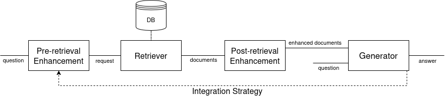
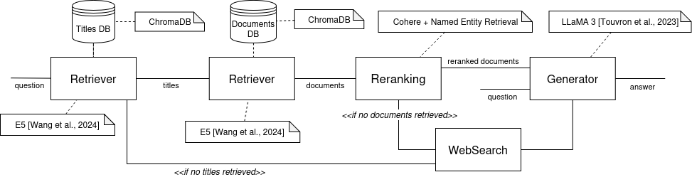
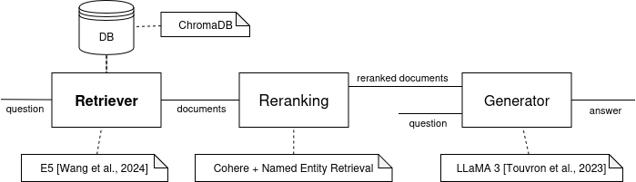
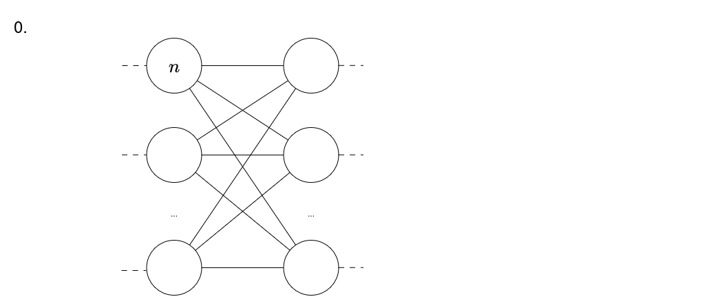
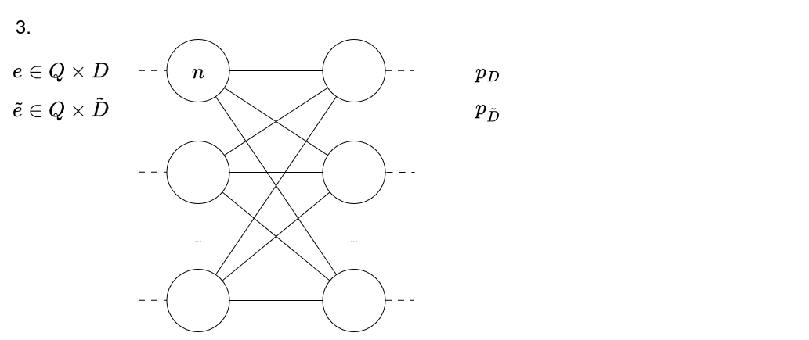
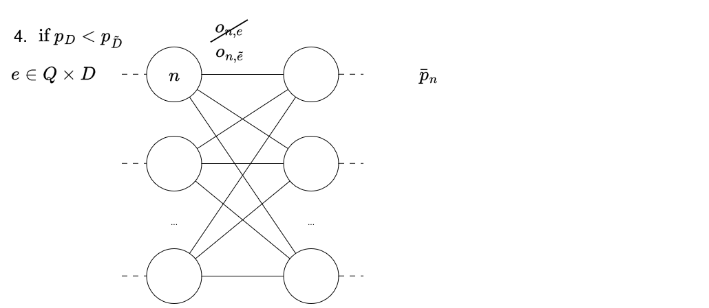
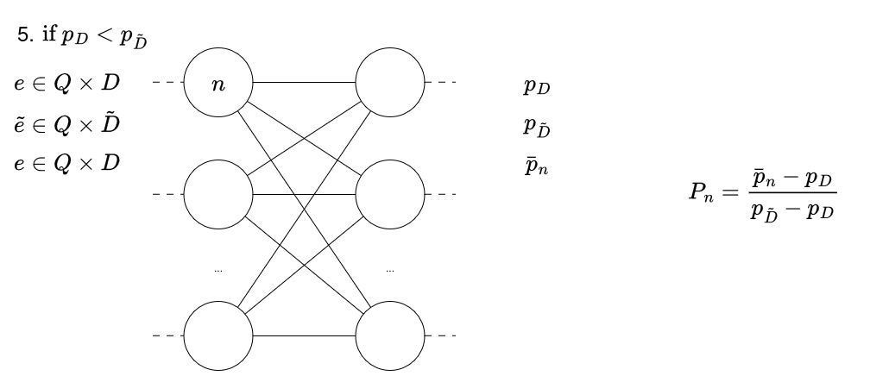
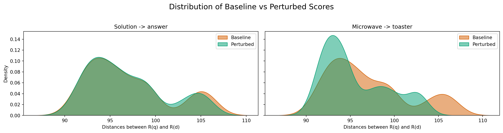
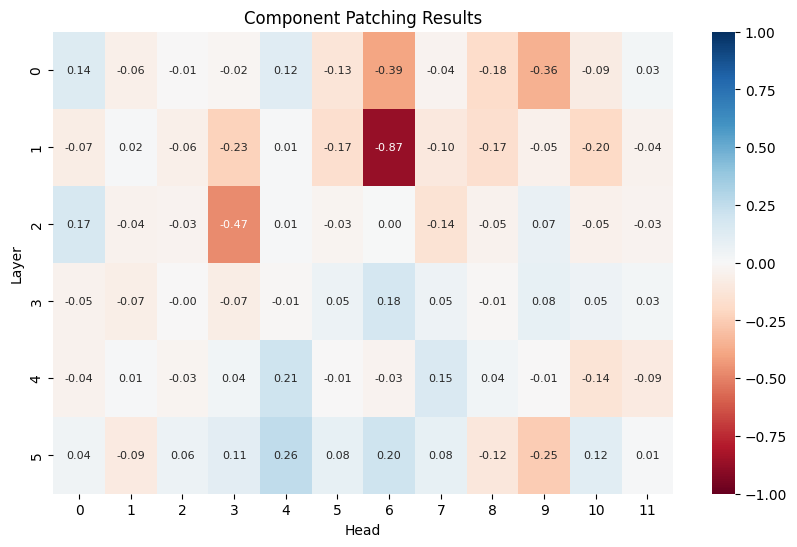
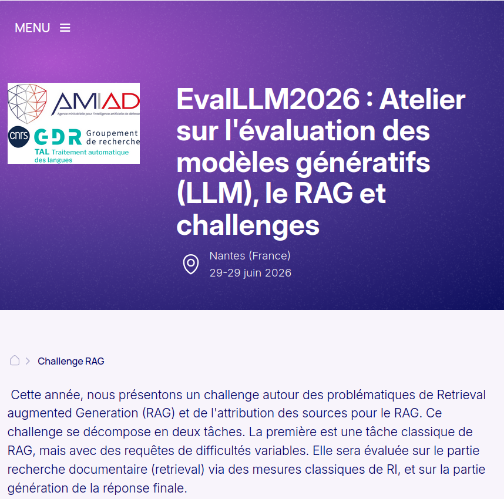

REPLACE
Query: [CLS] measurement of dielectric constant of liquids by the use of microwave techniques [SEP]
Baseline Document: [CLS] broadband millimetre wave paramagnetic resonance spectrometer the specimen and waveguide which can be cooled by means of a cryostat are placed between close pole pieces giving high uniform magnetic fields design details and some measurements on zero field splittings are given [SEP]
Perturbed Document: [CLS] broadband millimetre wave paramagnetic resonance spectrometer the specimen and waveguide which can be cooled by means of a cryostat are placed between close pole pieces giving high uniform magnetic fields design details and some measurements on zero field splittings are given [SEP]
==================================================
Query: [CLS] measurement of dielectric constant of liquids by the use of microwave techniques [SEP]
Baseline Document: [CLS] microwave a measurements of dielectric absorption in dilute solutions [SEP]
Perturbed Document: [CLS] toaster measurements of dielectric absorption in dilute solutions [SEP]
==================================================

Mechanistic interpretability for enhancing RAG models
Internship - Master 2 ARIAS Minerve
Marine Delvallez
Introduction & Context
Retrieval Augmented Generation - RAG
Retrieval Augmented Generation - Definition
Add a ressource database to a generative model
- increase sources reliability
- release the burden of knowledge on the generator
Tasks:
- Knowledge intensive Generation tasks
- Ex: Question Answering, Fact Checking, Dialogue, Retrieval
Retrieval
Models include Information Retrieval as a sub-task
Information Retrieval : Identify and rank useful documents and informations
2 principal technologies:
- cross-encoder \(\left(\mathcal{S}(q,d)\right)\)
- bi-encoder \(\left(\mathcal{R}(q) . \mathcal{R}(d)\right)\)
\(\Rightarrow\) Needs indexing before use
RAG Architectures


Examples


Explainability in Artificial Intelligence
Explainability in Artificial Intelligence
Open black box models
Aims
- Trustability
- Understandability
- Model Rectification
Definitions
XAI : Make model’s behavior understandable for human (Bell et al. 2022)
Understand : Predict model’s behavior (Bell et al. 2022)
Explanation : Any way to make the decision process of the model understandable for human
Interpretability
How ?
Explanability
Why ?
Explanation through creation of a model
Mechanistic Interpretability
Definition
Reverse-engineer neural networks by identifying internal components (neurons, circuits, activation pathways, …) that either contribute to or causally influence specific behaviors. (Somvanshi et al. 2026)
Several approches:
- Manual Circuit Tracing
- Representation Analysis
- Toy Models and Synthetic Tasks
- Intervention-based Techniques (Ablation, Activation Patching, …)
Activation Patching (Chen et al. 2024)
Let \(Q \times D \subset \mathcal{Q}\times\mathcal{D}\) be a set of pairs of questions and documents
Let \(Q \times \tilde{D}\) the same set of pairs but with perturbed documents
- Forward pass all \(Q\times D\)
- record \(o_{n}^e\) the output of each component \(n, \forall e \in Q\times D\)
- record \(p_D\) the performance of the model
- Forward pass all \(Q\times \tilde{D}\)
- record \(o_{n}^\tilde{e}\) the output of each component \(n, \forall \tilde{e} \in Q\times \tilde{D}\)
- record \(p_\tilde{D}\) the performance of the model
- Rewrite \(D, e, \tilde{D}\) and \(\tilde{e}\) as
- \(\hat{D}, \hat{e}, \check{D}\) and \(\check{e}\) if \(p_D > p_\tilde{D}\)
- \(\check{D}, \check{e}, \hat{D}\) and \(\hat{e}\) otherwise
Activation Patching (Chen et al. 2024)
- Rewrite \(D, e, \tilde{D}\) and \(\tilde{e}\) as
- \(\hat{D}, \hat{e}, \check{D}\) and \(\check{e}\) if \(p_D > p_\tilde{D}\)
- \(\check{D}, \check{e}, \hat{D}\) and \(\hat{e}\) otherwise
For each component \(n\)
- Forward pass \(Q\times\check{D}\) but replace \(o_{i,j}^{\check{e}}\) by \(o_{n}^{\hat{e}}\) for each \(\check{e}\). Record the performance \(\bar{p}_n\)
- \(P_{n} = \frac{\bar{p}_n - p_\hat{D} }{p_\check{D} - p_\hat{D}}\) gives the impact of the perturbation on the model performance
Animation de l’execution de Activation patching (Step 0)

Animation de l’execution de Activation patching (Step 1)
Animation de l’execution de Activation patching (Step 2)
Animation de l’execution de Activation patching (Step 3)

Animation de l’execution de Activation patching (Step 4)

Animation de l’execution de Activation patching (Step 5)

MechIR (Parry et al. 2025)
- Python library
- Activation Patching
- Information retrieval models
- Charts sensibility of model components to a perturbation
Use case of my internship
Use case : Domain specific language
Considering that activation patching charts the sensibility of a model to a perturbation
Hypothesis :
- Models have specific components on which rely domain specific language
- This part of the model implementing domain specific language can be charted with activation patching
- That map can be used to enhance model comprehension and robustness of the part of the model implementing domain specific language
Method
Building a perturbation
- Identify domain specific language \(L\) of the dataset
- List words from each text
- Calculate frequency and TF-IDF of each word
- Find the domain specific language
- Identify polysemic words \(w\) that has a different meaning in everyday language
- Find a synonym \(s\) of the everyday meaning of each \(w\)
- Build perturbation \(w \to s\)
Examples of perturbation
- solution -> answer
- microwave a measurements of dielectric absorption in dilute solutions
- microwave a measurements of dielectric absorption in dilute answers
- microwave -> toaster
- microwave a measurements of dielectric absorption in dilute solutions
- toaster a measurements of dielectric absorption in dilute solutions
Select useful Perturbation
- Forward pass baseline and perturbed documents
- Select relevant perturbations
Relevant : Moves documents in the latent space

Chart Model sensibility to the perturbation
- Map the model sensibility to the perturbation with activation patching

Finetune the Model
- Modify sensible weights
WORK IN PROGRESS
Experimentation
Setup - Dataset
- Extracted from EvalLLM2026 Challenge dataset
- French Defense dataset
- Pairs
(question, chunk of document) - 52 pairs, 26 questions

Setup - Model
E5-small (Wang et al. 2022)
- Constrative bi-encoder
- Pre-trained on unlabeled pairs (query, passage) CCPairs
- Finetuned with labelled pairs
- Based on MiniLM (Wang et al. 2021)
- 33M params
Setup - Mechanistic Interpretability Tools
Python libraries:
- MechIR (Parry et al. 2025)
- TransformerLens (Nanda and Bloom 2022)
First results - Domain specific language identification
- Defense-specific language is prevalent
| Word | Frequency | TF-IDF score |
|---|---|---|
| militaire | 26 | 0.04494102684257385 |
| drone | 21 | 0.04081921309724857 |
| article | 13 | 0.0317659447734224 |
| défense | 9 | 0.018444049962599192 |
| emploi | 7 | 0.017992160135997803 |
| armée | 7 | 0.0166576415296721 |
| … | … | … |
First results - Perturbations in general


First results - Best Perturbations


- needs more complex perturbation (grammar, group of words)
- not enough
. . .
LLMs target polysemy problem of models like Word2Vect, Neural Shallow
Work left for the next 2,5 months
- Identify new perturbations
- new words and synonyms
- new type of perturbation
- Chart the sensibility of the model to new perturbations
- Identify model modifications that enhance domain specific language comprehension/ use
Conclusion & Perspectives
Conclusion
- H1 : Models have specific components dedicated to domain specific language
- H2 : This domain specific language dedicated part of the model can be charted with activation patching
- H3 : That map can be used to enhance model comprehension and robustness of the domain specific language dedicated part of the model
\(\Rightarrow\) Work in Progress
Other perturbations and linguistic structures
- subgroups of domain specific language
- temporal relationships
- negation
- expression of diachrony
- language switching
Other uses of the map
- Transfert learning
- Prunning
- Specialization of general models
Take away ideas
Create relevant perturbations : not that simple
- Perturbations interact with latent space
- Polysemy is well supported by LLMs
- Impact of perturbations is hard to interpret
Thanks for you attention
Questions
References
Bell, Andrew, Ian Solano-Kamaiko, Oded Nov, and Julia Stoyanovich. 2022. “It’s Just Not That Simple: An Empirical Study of the Accuracy-Explainability Trade-Off in Machine Learning for Public Policy.” 2022 ACM Conference on Fairness Accountability and Transparency (Seoul Republic of Korea), June, 248–66. https://doi.org/10.1145/3531146.3533090.
Chen, Catherine, Jack Merullo, and Carsten Eickhoff. 2024. “Axiomatic Causal Interventions for Reverse Engineering Relevance Computation in Neural Retrieval Models.” Proceedings of the 47th International ACM SIGIR Conference on Research and Development in Information Retrieval (Washington DC USA), July, 1401–10. https://doi.org/10.1145/3626772.3657841.
Fan, Wenqi, Yujuan Ding, Liangbo Ning, et al. 2024. A Survey on RAG Meeting LLMs: Towards Retrieval-Augmented Large Language Models. arXiv. https://doi.org/10.48550/arXiv.2405.06211.
Lewis, Patrick, Ethan Perez, Aleksandra Piktus, et al. 2020. “Retrieval-Augmented Generation for Knowledge-Intensive NLP Tasks.” arXiv: Computation and Language.
Nanda, Neel, and Joseph Bloom. 2022. TransformerLens. https://github.com/TransformerLensOrg/TransformerLens.
Parry, Andrew, Catherine Chen, Carsten Eickhoff, and Sean MacAvaney. 2025. “MechIR: A Mechanistic Interpretability Framework for Information Retrieval.” Advances in Information Retrieval - 47th European Conference on Information Retrieval, ECIR 2025, Lucca, Italy, April 6-10, 2025, Proceedings, Part V, Lecture Notes in Computer Science, vol. 15576: 89–95. https://doi.org/10.1007/978-3-031-88720-8_16.
Somvanshi, Shriyank, Md Monzurul Islam, Amir Rafe, et al. 2026. “Bridging the Black Box: A Survey on Mechanistic Interpretability in AI.” ACM Computing Surveys 58 (8): 1–35. https://doi.org/10.1145/3787104.
Tran, The Trung, Carlos-Emiliano González-Gallardo, and Antoine Doucet. 2024. “Retrieval Augmented Generation for Historical Newspapers.” Proceedings of the 24th ACM/IEEE Joint Conference on Digital Libraries (Hong Kong China), December, 1–5. https://doi.org/10.1145/3677389.3702542.
Wang, Liang, Nan Yang, Xiaolong Huang, et al. 2022. Text Embeddings by Weakly-Supervised Contrastive Pre-Training. https://arxiv.org/abs/2212.03533v2.
Wang, Wenhui, Hangbo Bao, Shaohan Huang, Li Dong, and Furu Wei. 2021. “MiniLMv2: Multi-Head Self-Attention Relation Distillation for Compressing Pretrained Transformers.” In Findings of the Association for Computational Linguistics: ACL-IJCNLP 2021, edited by Chengqing Zong, Fei Xia, Wenjie Li, and Roberto Navigli. Association for Computational Linguistics. https://doi.org/10.18653/v1/2021.findings-acl.188.